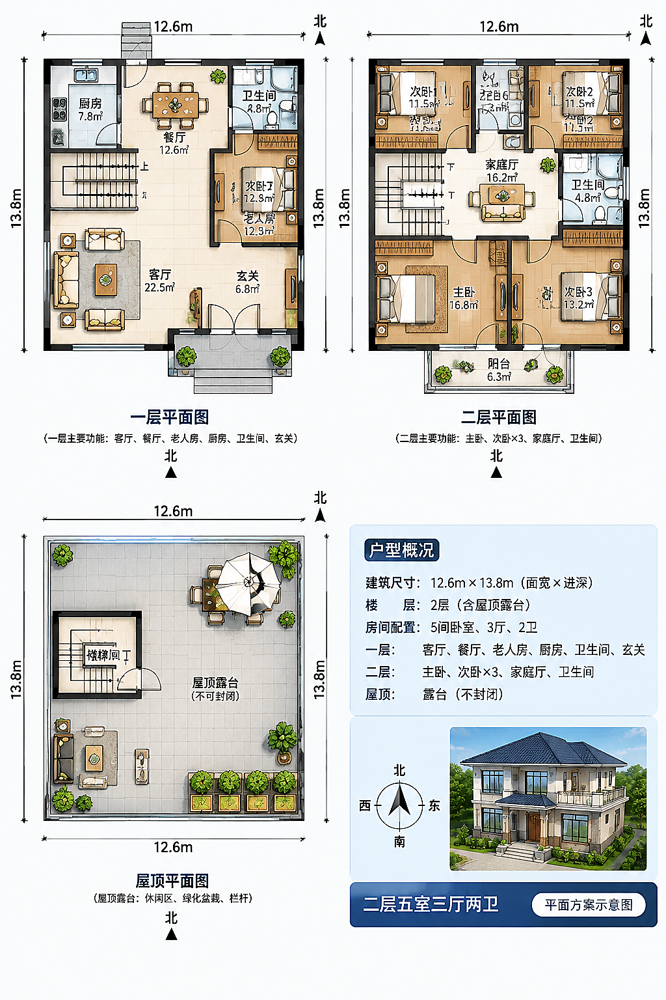
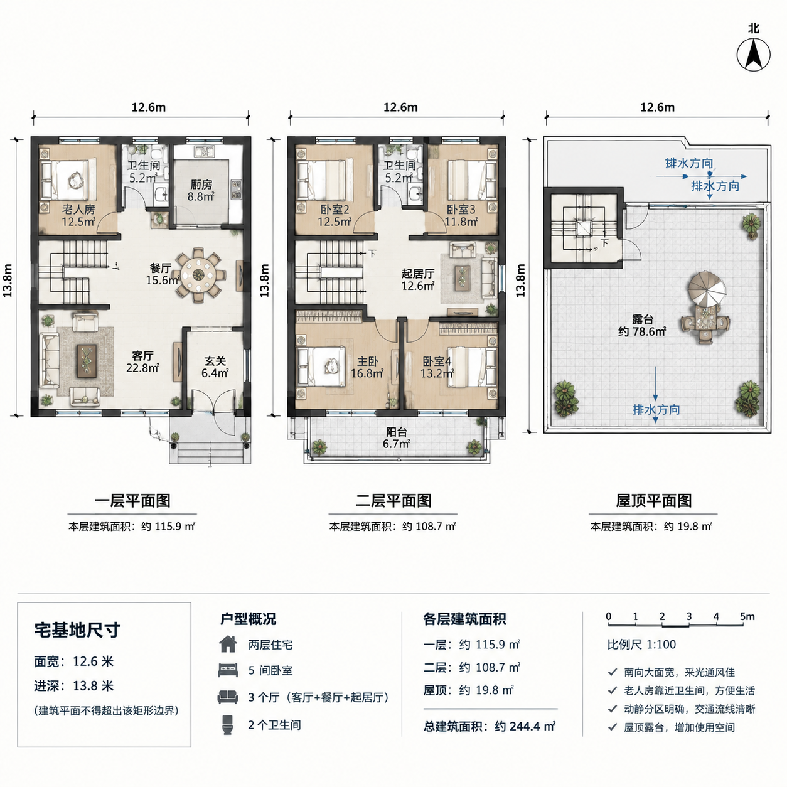

AI
AI 正在绘制方案
为您生成 4 个平面方案 · 预计 2~4 分钟
68%已用时 02:41
1排队
2生成
3校验
4完成
已生成候选（2/4）
每张方案一通过校验就会出现在这里，无需等待全部完成
候选 1 · 已通过

选它候选 2 · 已通过

选它候选 3 · 生成中
AI 绘制中…
—候选 4 · 排队
等待中
—i生成失败或数量不足时按有效方案结算，退点自动到账
后台继续
取消生成